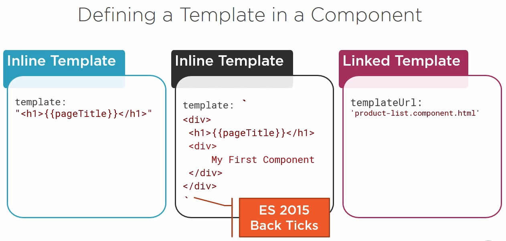
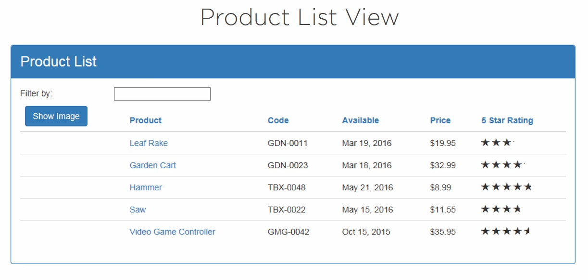

Typescript type definition files (*.d.ts)
And using object !how to use? ES 2015
1. create code file: product.ts
export class Product { //
}
2. and another file: product-list.ts
import { Product } from
'.product'Decorator is a function that adds metadata to a class, its members, or its method arguments
prefixed with an @
Comment: this decorator @Component is right above the export class like attribute in c#
we have view layout, binding and directive name used in html
Component = Template + Class + MetadaaHere is the example:

